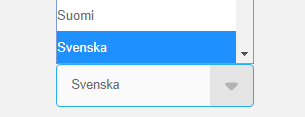
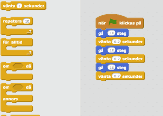
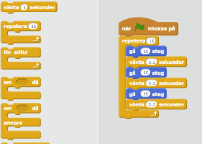

Nu ska du få lära dig hur man kan få skript att köra flera gånger genom att bara lägga till ett extra skript.
Detta gör att man kan få sprajtar att röra sig hela tiden, istället för bara några steg. Tänk till exempel hur fienderna i Pacman rör sig hela tiden, eller hur bollen i Pong studsar fram och tillbaka.
Precis som i den förra uppgiften ska vi börja med att remixa ett program.



Vi kan nu koda som vi vill i det remixade projektet. I detta program finns redan några rörelse-skript utplacerade. Vi ska nu lära oss hur vi kan få roboten att repetera saker flera gånger.
På skriptytan finns redan några skript utplacerade. Om du klickar på den gröna flaggan kommer du se att roboten rör sig några steg, väntar och sedan går några steg tillbaka. Vi ska nu få roboten att göra om denna rörelse flera gånger.

Snyggt jobbat! Nu rör sig roboten fram och tillbaka flera gånger innan hon stannar. Och vi behövde bara lägga till ett extra skript för att göra det.
Nu ska vi lära oss hur vi får roboten att gå fram och tillbaka för alltid, ända tills vi stänger av programmet.
Ta bort "repetera 10"-skriptet som vi tog fram i förra uppgiften.
Ta fram ett "för alltid"-skript från Kontroll och lägg runt skripten.

Superbra! Nu rör sig roboten fram och tillbaka utan att stanna. För att stänga av programmet kan du klicka på den röda knappen bredvid den gröna flaggan.